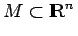
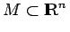
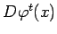
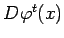

Inhalt Index DeskTop Bronstein

 Dynamische Systeme und Chaos Quantitative Beschreibung von Attraktoren Lyapunov-Exponenten
Dynamische Systeme und Chaos Quantitative Beschreibung von Attraktoren Lyapunov-Exponenten


Sei  ein glattes dynamisches System auf , das einen Attraktor
ein glattes dynamisches System auf , das einen Attraktor  mit einem dort konzentrierten invarianten ergodischen Wahrscheinlichkeitsmaß
mit einem dort konzentrierten invarianten ergodischen Wahrscheinlichkeitsmaß  hat. Für beliebige
hat. Für beliebige  und
und  seien die Singulärwerte der JACOBI-Matrix  von
seien die Singulärwerte der JACOBI-Matrix  von  im Punkt
im Punkt  . Dann existiert eine Folge von Zahlen (LYAPUNOV-Exponenten), so daß für -fast überall im Sinne von L1 gilt.
. Dann existiert eine Folge von Zahlen (LYAPUNOV-Exponenten), so daß für -fast überall im Sinne von L1 gilt.
Satz von Oseledec: Nach dem Satz von OSELEDEC existiert  -fast überall eine Folge von Teilräumen des
-fast überall eine Folge von Teilräumen des 
| (17.38) |
so daß für  -fast alle x die Größe gleichmäßig bezüglich gegen ein Element strebt.
-fast alle x die Größe gleichmäßig bezüglich gegen ein Element strebt.